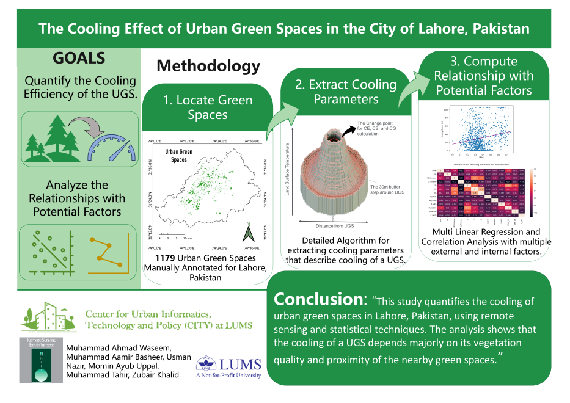

§ 01
PROBLEM
PROBLEM
What it had to solve.
Climate adaptation budgets are limited; city planners need to know which parks actually cool and which don't — without running ground sensors at every site.
Remote-sensing pipeline quantifying how urban green spaces mitigate land surface temperature during extreme heat events. Landsat LST + Sentinel-2 NDVI, multi-city.

Climate adaptation budgets are limited; city planners need to know which parks actually cool and which don't — without running ground sensors at every site.
Combines Landsat-derived LST with Sentinel-2 NDVI inside municipal boundary shapefiles, computing a per-park cooling index over 10 years. Anomaly detection surfaces heatwave episodes for event-by-event analysis.
Parks larger than 2 hectares with >60% canopy cover provided 2.4°C sustained cooling; smaller parks below 40% canopy showed no significant effect.